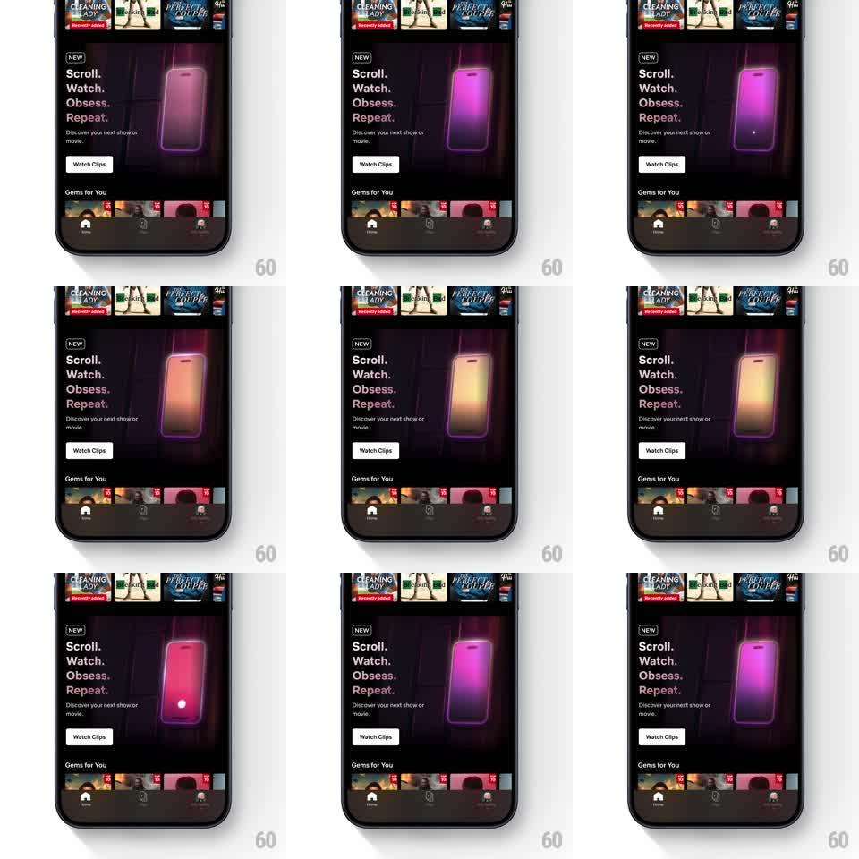

Media
Frame-by-frame

Rebuild this animation 1:1: Netflix's Clips intro card - a dark promo card with bold stacked copy ("Scroll. Watch. Obsess. Repeat.") beside a 3D phone render whose screen cycles neon gradient glows (magenta, amber, violet) with a subtle tilt, on an endless ambient loop.

Rebuild this animation 1:1: Netflix's Clips intro card - a dark promo card with bold stacked copy ("Scroll. Watch. Obsess. Repeat.") beside a 3D phone render whose screen cycles neon gradient glows (magenta, amber, violet) with a subtle tilt, on an endless ambient loop.
## Integration
Integration: stack-agnostic spec - springs given as stiffness/damping, timed motions as duration + curve; map every value to your framework and animation library of choice.
## Scene
Dark streaming home: "NEW" eyebrow, 4-line stacked headline left, "Watch Clips" button, and a 3D phone render right showing a glowing vertical screen. The card background is near-black with a faint neon wash matching the phone's current glow color.
## Motion spec
Pattern: ambient loop.
- Phone glow: the screen's neon gradient cycles colors (magenta -> amber -> violet -> magenta, ~8s full cycle, smooth interpolation).
- Phone tilt: slow rocking (rotateY +-6deg, rotateX +-2deg, 6s ease-in-out) so the glow catches different angles.
- Background wash: the card's ambient tint follows the glow color at low saturation (synced, ~30% intensity).
- A small light dot occasionally drifts across the phone screen (like a scroll indicator, 2s transit, every ~5s).
- No interaction; loop is seamless.
## Calibration
- Color cycle is the motion - the tilt is secondary texture.
- The glow spills onto the card around the phone (bloom), which is what makes it read neon.
## Reduced motion
Static phone with one glow color; no cycle, no tilt.
## Don't miss
- Headline and button never animate - contrast between still type and living render.
- The phone's glow reflects on its own bezel edges.